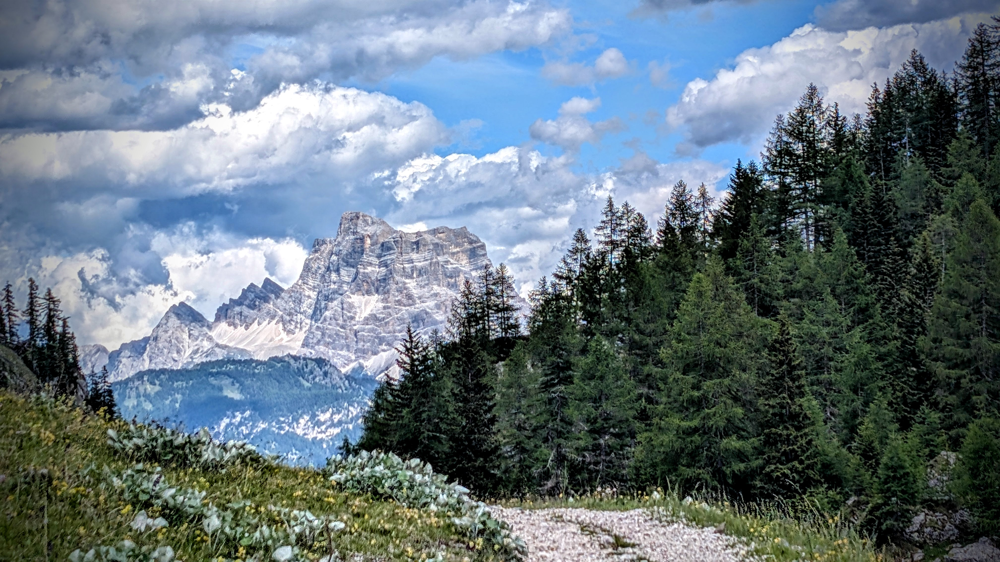
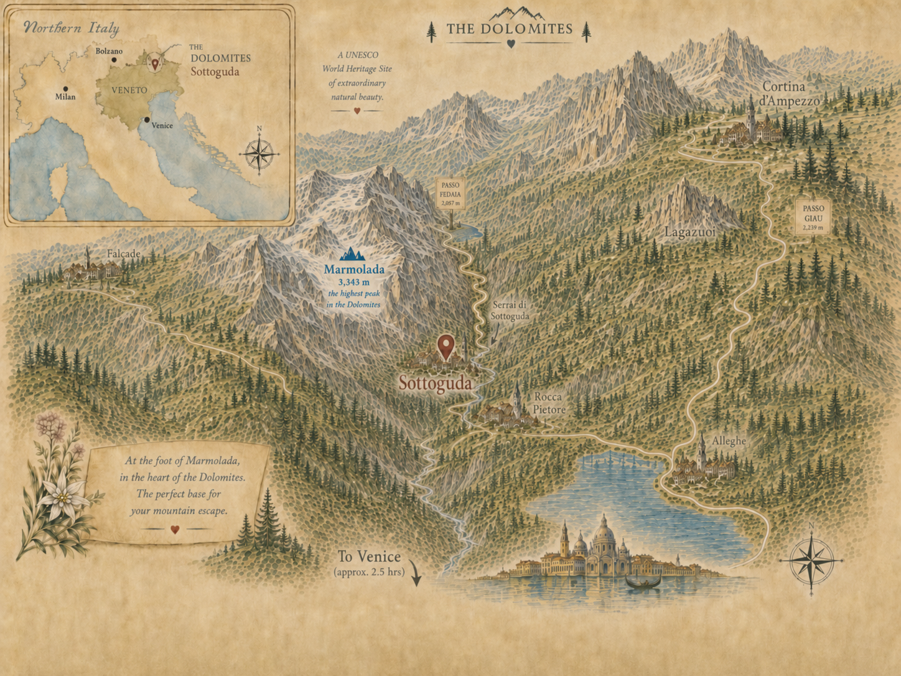

Dolomite apartment rental in Sottoguda, ItalyAppartamento in affitto a Sottoguda, Dolomiti
Stone, Snow & Sky.Pietra, neve e cielo.
Wake up in Sottoguda, surrounded by the peaks, forests, and changing light of the Dolomites. Casa Mirabella is your place to settle in.Svegliati a Sottoguda, tra le cime, i boschi e la luce mutevole delle Dolomiti. Casa Mirabella è il tuo punto di partenza.
The apartmentL’appartamento
A comfortable home base in the heart of Sottoguda.Una casa accogliente nel cuore di Sottoguda.
Casa Mirabella is a compact, well-appointed home with a bright living room, a practical kitchen, two bedrooms, and one bathroom—an easy place to return to after a day in the Dolomites.
Casa Mirabella è una casa raccolta e ben attrezzata, con soggiorno luminoso, cucina funzionale, due camere e un bagno: un luogo semplice in cui tornare dopo una giornata nelle Dolomiti.
See the apartmentScopri l’appartamentoSottoguda & the DolomitesSottoguda e le Dolomiti
Stay in Sottoguda, beneath Marmolada and among the landscapes of the Dolomites.Soggiorna a Sottoguda, ai piedi della Marmolada e tra i paesaggi delle Dolomiti.
Casa Mirabella puts the village, the Serrai di Sottoguda, Marmolada, and the surrounding Dolomites at the center of your stay. Find detailed ideas for hiking, skiing, cycling, and exploring on the Explore page.Casa Mirabella mette al centro del soggiorno il borgo, i Serrai di Sottoguda, la Marmolada e le Dolomiti circostanti. Nella pagina Dintorni trovi idee per trekking, sci, ciclismo ed escursioni.
Explore the areaScopri la zona
Plan your stayOrganizza il soggiorno
Make Casa Mirabella your base in Sottoguda.Scegli Casa Mirabella come base a Sottoguda.
Check the calendar and request your stay.Controlla il calendario e richiedi il tuo soggiorno.
Check Availability & BookVerifica disponibilità e prenota